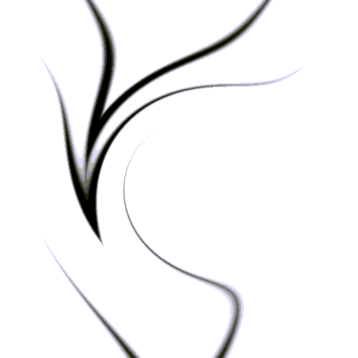
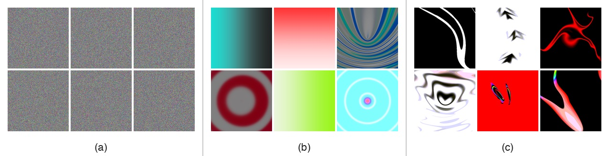
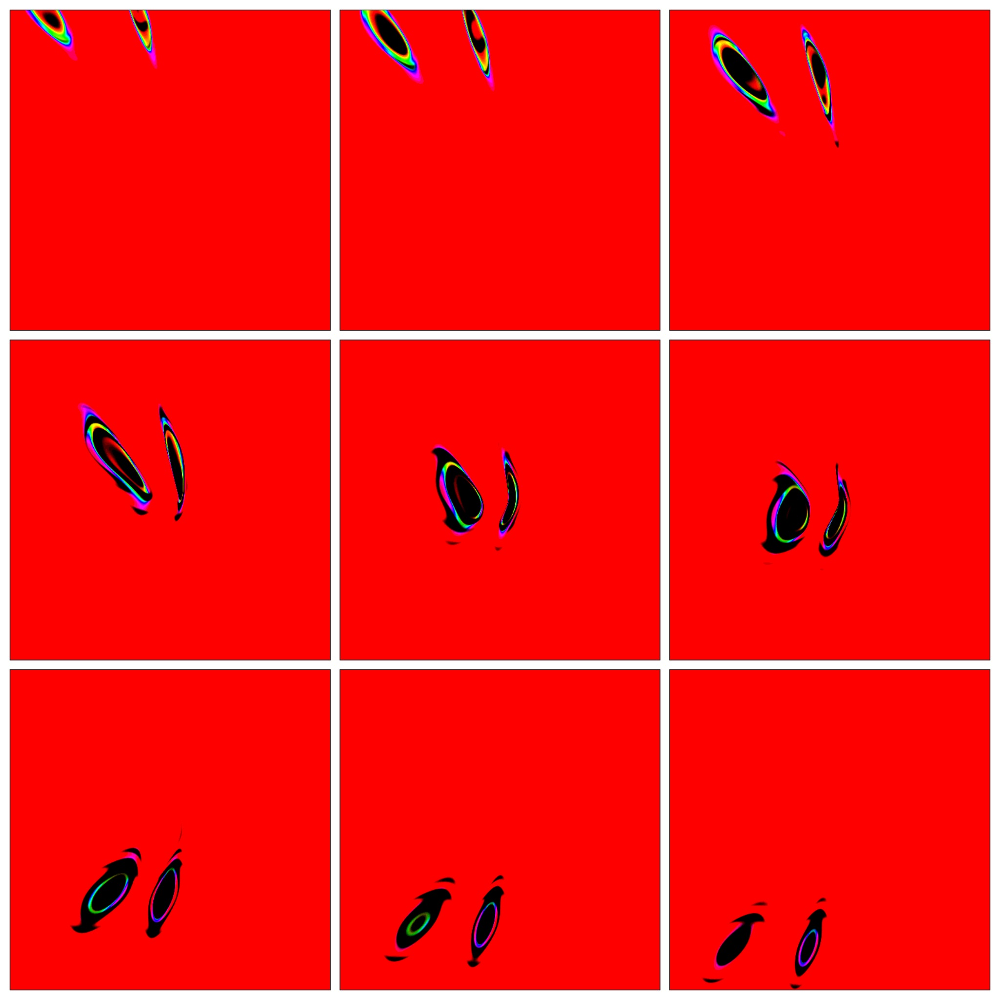
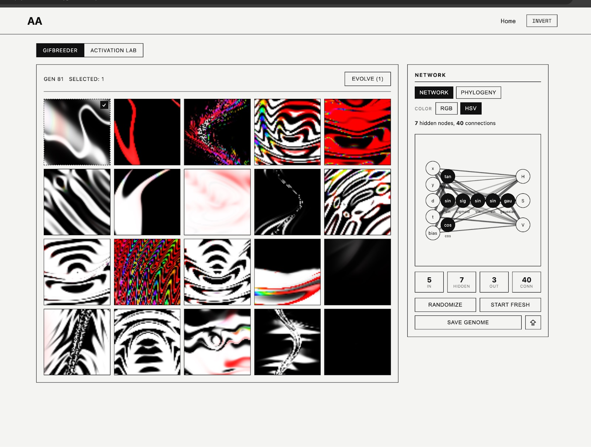
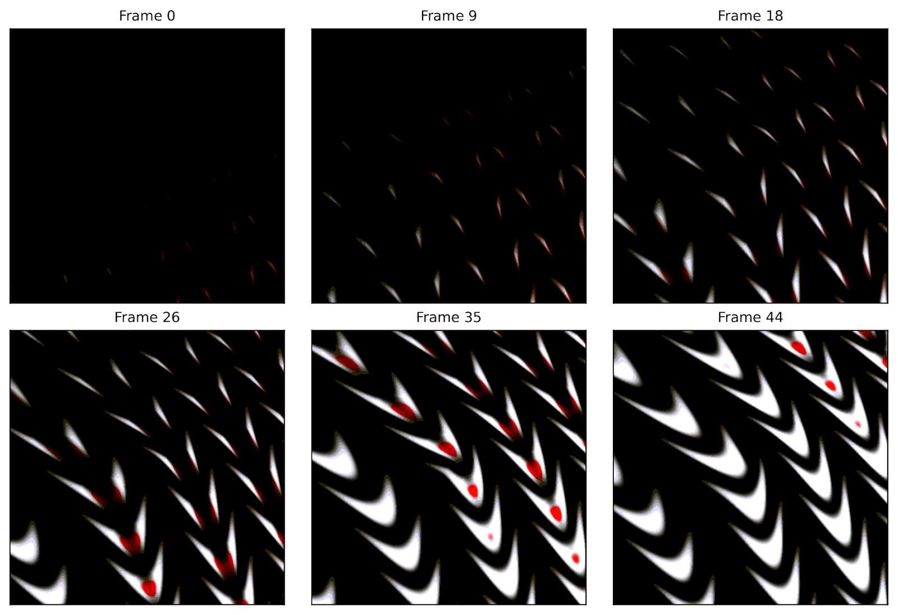
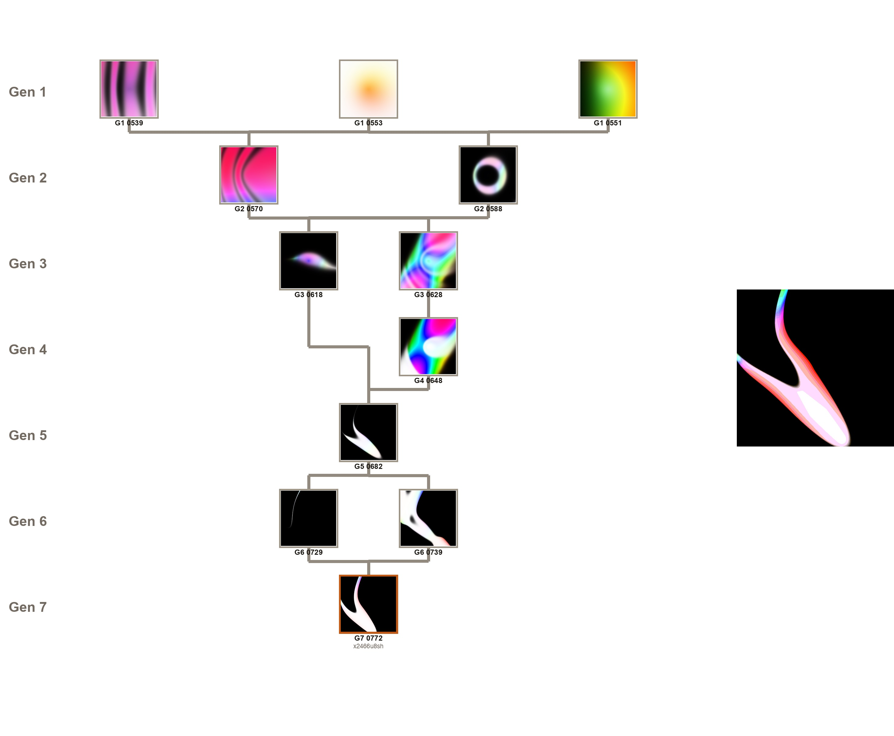
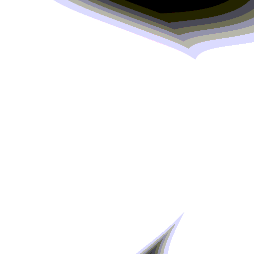
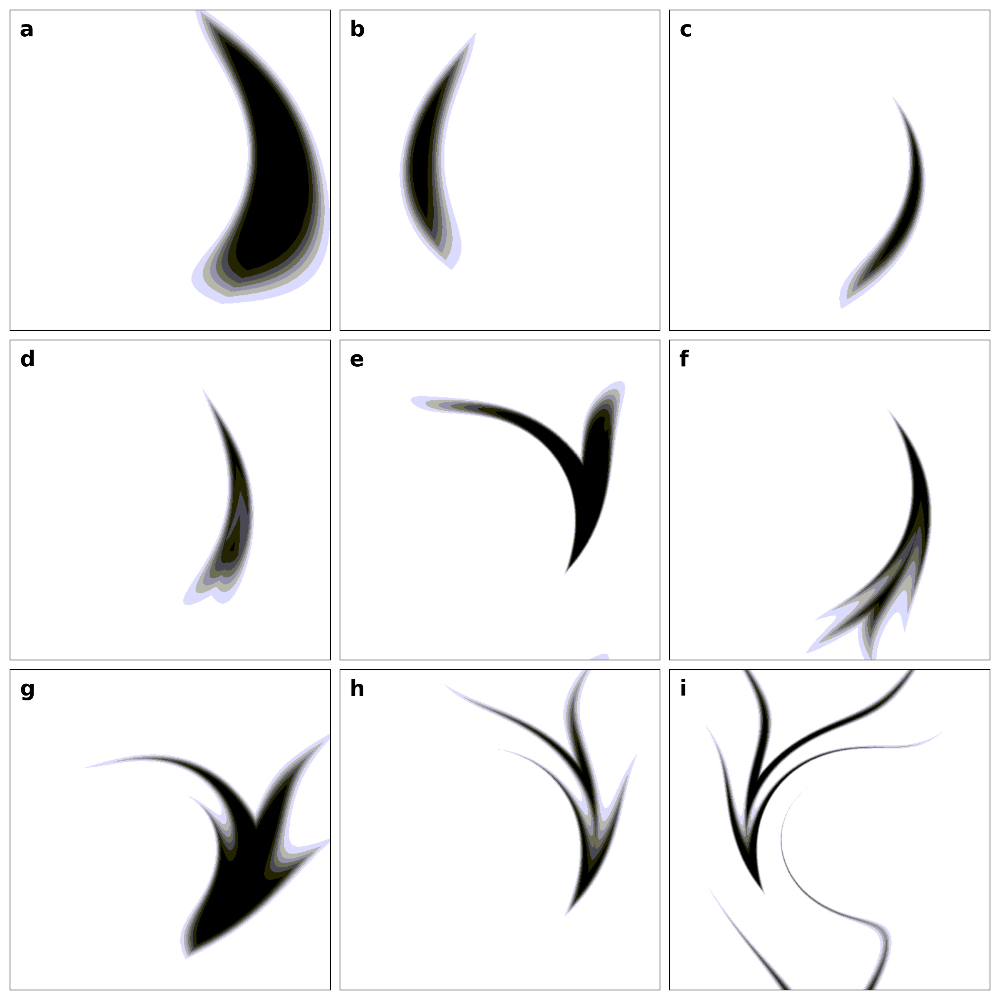
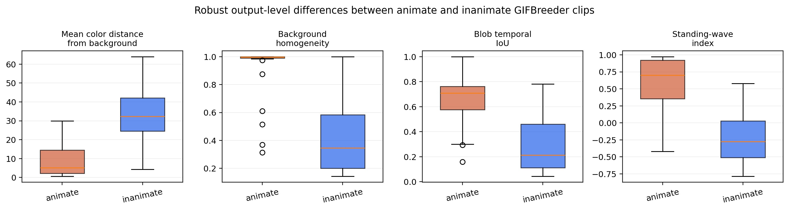

Limbomorphs
Short version
GIFBreeder is an experiment where people evolve short animations by choosing which GIFs should become parents of the next generation. It starts with small mathematical networks that turn position and time into color. Most random outputs are noise, but human selection can nudge them toward little moving forms that look like they are swimming, turning, or bumping into each other. I call those forms limbomorphs: not living creatures, but moving patterns that pull on our sense of animacy.
What are limbomorphs?
A limbomorph is a GIFBreeder animation that looks creature-like. There is no simulated body, brain, physics, or environment behind it. The whole clip is generated by a compact function that answers one question over and over: at this position and this time, what color should this pixel be?

The surprising part is that these patterns can begin to feel alive. A dark blob may seem to chase another blob. A shape may bend like it is steering. A cluster may hold together long enough for us to treat it as an object, even though it is only a direct color function over space and time.
The project asks a smaller question than "is this alive?": what visual ingredients make us see life in abstract motion?
Animated original - 3 seconds

View sampled frames

The main idea is simple:
- Adding time turns Picbreeder-style images into short moving fields.
- Human selection tends to favor outputs with a clear figure and ground.
- Some outputs resemble little agents because the moving regions stay localized and coherent.
How GIFBreeder works
Each GIF is made by a CPPN, a small network that behaves like a reusable drawing recipe. You do not draw the frames by hand. Instead, the network receives coordinates and time, then outputs the color for each pixel.
The recipe can be summarized like this:
Here x and y are pixel position, d is distance from the center, t is time, and b is a constant bias input. The outputs are hue, saturation, and value. Asking the same network this question across a grid and across 45 moments produces a 3-second GIF.
Because every frame comes straight from this function, GIFBreeder is not running a tiny world forward one step at a time. It is closer to sculpting a block of spacetime and then slicing it into frames.

The networks use a mix of smooth, wavy, localized, and threshold-like functions. Those ingredients are good at making stripes, blobs, edges, pulses, and repeated motion. Evolution decides how to combine them; the human decides which outputs are worth keeping.
Animated original - 3 seconds

View sampled frames

Breeding
In each generation, the user picks the GIFs they like. Those chosen GIFs survive into the next generation, and the rest of the population is filled with mutated or recombined children. Repeating that loop lets a person wander through a huge space without needing to specify the final image in advance.
What shows up
Random clips mostly look like static, smear, or visual texture. Human-bred clips are different: they often develop a stable foreground shape, a quieter background, and motion that is easy to track.
Limbomorphs
Some families of GIFs produce especially creature-like forms. They are "limbo" creatures because they live in a strange in-between space: not simulated organisms, not ordinary drawings, but animated mathematical expressions that we still read as bodies in motion.

The most convincing examples tend to share a recipe: a relatively calm background, one or a few contrasting regions, and motion that keeps those regions together across time. That is enough for the eye to start tracking them as if they were little agents.
Nine animated originals - 3 seconds each





Takeaway
Limbomorphs are a reminder that life-like motion can appear before there is any life model. A person, a generative system, and a little time input are enough to find patterns that sit near our perceptual triggers for agency. The paper goes deeper into the measurements and implementation, but this page is the simple version: GIFBreeder lets people breed motion, and some of that motion starts to feel creature-like.